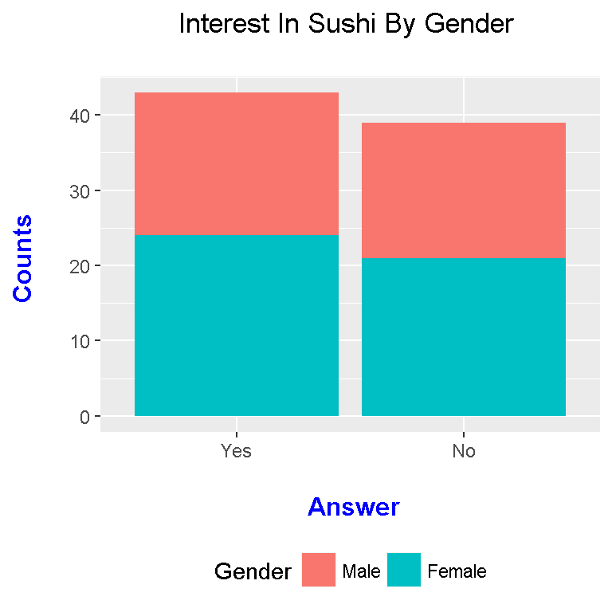
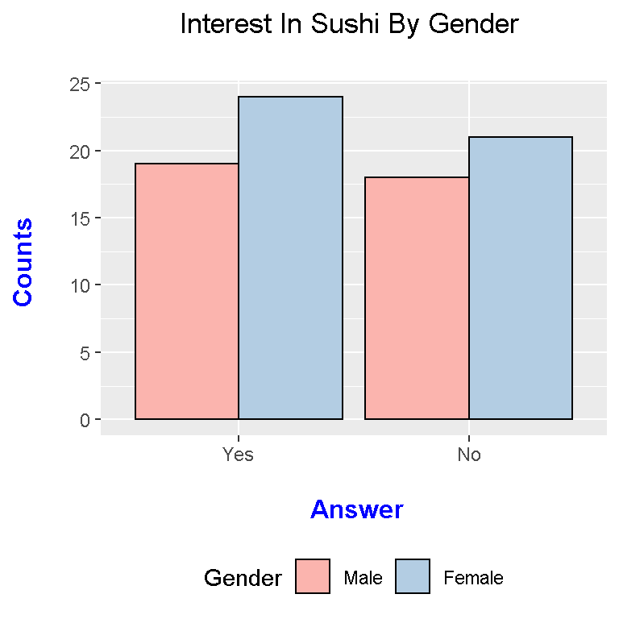
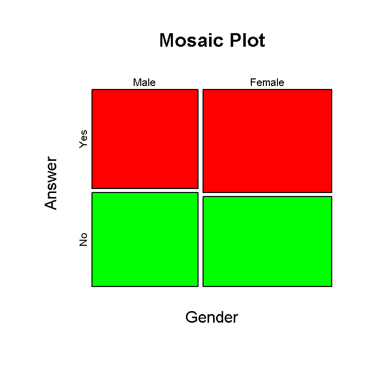
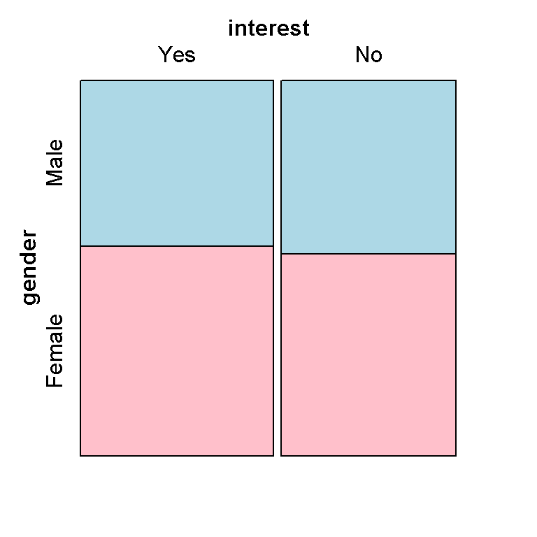

Hello everyone. This page is about working with a two by two table in the statistical programming language R.
I start with creating sample (fake) data where males and females are surveyed whether or not they like sushi or not.
# Contingency Tables In R
# Book: Extending The Linear Model With R By Julian J Faraway
# Creating a Sample Table: Do You Like Sushi By Gender?
# gl() generates factor levels
library(ggplot2)
counts <- c(19, 24, 18, 21)
gender <- gl(n = 2, k = 1, length = 4, labels = c("Male", "Female"))
interest <- gl(n = 2, k = 2, length = 4, labels = c("Yes", "No"))
survey_data <- data.frame(counts, gender, interest)
survey_data## counts gender interest
## 1 19 Male Yes
## 2 24 Female Yes
## 3 18 Male No
## 4 21 Female No
From the survey data, you can easily create bar graphs with the ggplot2 package in R.
#### ggplot2 Graphs
# Data Visualization Of Contingency Table With ggplot2 (Stacked Bar Graph):
ggplot(data = survey_data, aes(x = interest, y = counts, fill = gender)) +
geom_bar(stat = "identity") +
labs(x = "\n Answer", y = "Counts \n",
title = "Interest In Sushi By Gender \n",
fill = "Gender") +
theme(plot.title = element_text(hjust = 0.5),
axis.title.x = element_text(face="bold", colour="blue", size = 12),
axis.title.y = element_text(face="bold", colour="blue", size = 12),
legend.position = "bottom")
The above plot is a stacked bar graph. An alternative to the above would be side by side bar graphs.
# Data Visualization Of Contingency Table With ggplot2 (Side By Side Bar Graph):
ggplot(data = survey_data, aes(x = interest, y = counts, fill = gender)) +
geom_bar(stat = "identity", position = "dodge", colour = "black") +
scale_fill_brewer(palette = "Pastel1") +
labs(x = "\n Answer", y = "Counts \n",
title = "Interest In Sushi By Gender \n",
fill = "Gender") +
theme(plot.title = element_text(hjust = 0.5),
axis.title.x = element_text(face="bold", colour="blue", size = 12),
axis.title.y = element_text(face="bold", colour="blue", size = 12),
legend.position = "bottom")
I have also changed the colour palette to mix things up.
Instead of the long format from the beginning, you can display the table as a two by two contingency table.
### Contingency Tables (2 by 2 Case)
conting_table <- xtabs(counts ~ gender + interest)
conting_table## interest
## gender Yes No
## Male 19 18
## Female 24 21
From this contingency table, you can create a mosaic plot.
# Mosaic Plot (Base R):
mosaicplot(conting_table, color = c("red", "green"), main = "Mosaic Plot",
xlab = "Gender", ylab = "Answer")
Since the counts are really close to each other, it is hard to see a difference between the tile sizes.
An alternate moasic plot comes from the vcd package in R.
# Mosaic Plot (vcd package):
library(vcd)##
## Attaching package: 'vcd'## The following object is masked from 'package:ISLR':
##
## Hittersmosaic( ~ gender + interest , data = conting_table,
highlighting = "gender", highlighting_fill=c("lightblue", "pink"))
Other than the colours and labels, this mosaic plot does not look that much different. Also, I have not figured out how to adjust the label titles and such.
The counts are at least zero (non-negative) and are whole numbers. When dealing with a two by two table, linear regression does not really work. With this data, a Poisson regression model is used.
In R, the glm() function is used where glm stands for generalized linear model. Make sure to indicate family = "poisson" in the glm() function.
# Poisson Regression
poisson_model <- glm(counts ~ gender + interest, family = "poisson", data = survey_data)
summary(poisson_model)##
## Call:
## glm(formula = counts ~ gender + interest, family = "poisson",
## data = survey_data)
##
## Deviance Residuals:
## 1 2 3 4
## -0.09168 0.08261 0.09557 -0.08726
##
## Coefficients:
## Estimate Std. Error z value Pr(>|z|)
## (Intercept) 2.96540 0.19516 15.195 <2e-16 ***
## genderFemale 0.19574 0.22192 0.882 0.378
## interestNo -0.09764 0.22113 -0.442 0.659
## ---
## Signif. codes: 0 '***' 0.001 '**' 0.01 '*' 0.05 '.' 0.1 ' ' 1
##
## (Dispersion parameter for poisson family taken to be 1)
##
## Null deviance: 1.008909 on 3 degrees of freedom
## Residual deviance: 0.031979 on 1 degrees of freedom
## AIC: 25.474
##
## Number of Fisher Scoring iterations: 3